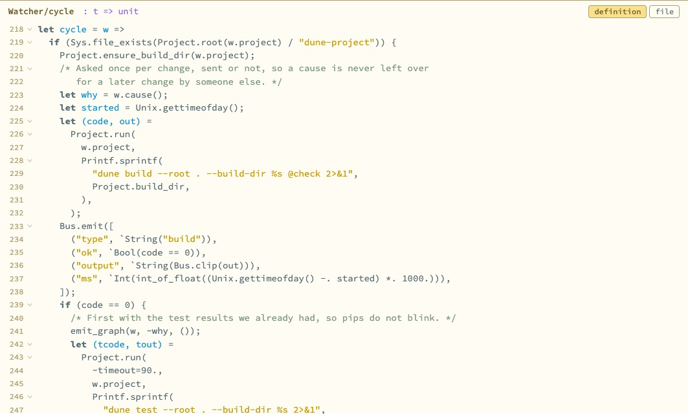
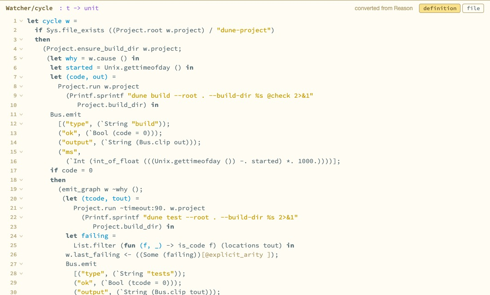
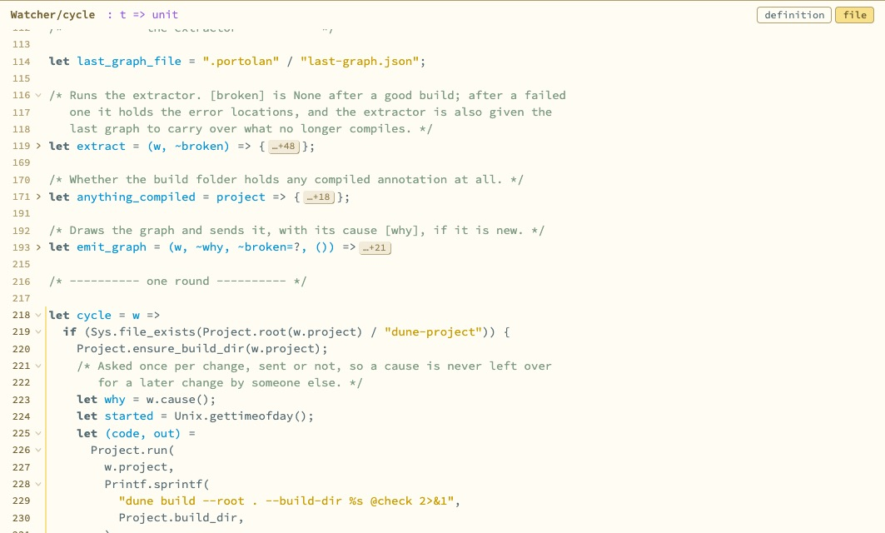

Can code be coloured by sort without a parser?
Mostly, yes. A lexer and one pass that keeps track of whether it is inside a pattern, a type or an expression gets ordinary Reason and OCaml right, with a short list of misses.
- Why
Andrew asked for a real code view (CodeMirror) in Hazel's colours. Hazel colours code by sort: expressions, patterns and types each have a colour. Hazel knows the sort of everything because it edits structure. A page showing a slice of a text file does not.
- What was done
-
A helper agent wrote the highlighter: the whole text is split into tokens, then one pass assigns each a sort from context. After a colon comes a type, until something ends it. Names bound by
let, by a function's parameters or by aswitcharm are patterns. Declarations aftertypeare types. It is the same code for Reason and OCaml, with different rules for where things end.It was run over Portolan's 58 source files, Hazel's 646 Reason files and some of the OCaml standard library, looking for places where the colouring ran away. I checked the merged result on two definitions.
What happened

Watcher.cycle: bound names in the pattern colour, the signature in the type colour.
No file made the colouring run away. Where it is wrong, it is wrong for one construct at a time:
- a function written inside a
whenguard, and the name bound by aforloop, in Reason; - a module signature written inline, which is coloured as an expression;
- objects, classes and JSX, which are not handled;
- constructors and module names take the colour of whatever sort they sit in, as in Hazel.

- What it means
Context tracking is enough for reading. It will not be enough for editing, where a half-typed definition has to keep its colours; that is one more reason editing wants the compiler's parse rather than a tokenizer.
- Open
-
In the dark theme the pattern and type colours are the same grey, so types are set in italics. Comments are darker than Hazel's so interface comments can be read. The folded-lines chip reads …+N. All three are proposals.
The panel does not yet refresh when the agent changes the file being shown.